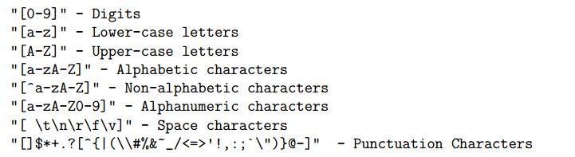

Chương 7 Biến đổi dữ liệu text
library(dplyr)
library(stringr)7.1 Giới thiệu
Bên cạnh dữ liệu định dạng số, dữ liệu chứa rất nhiều định dạng character. Do đó, việc nắm vững các nguyên lý và biến đổi dữ liệu định dạng character trong R sẽ giúp rất nhiều trong việc xử lý dữ liệu.
Để tạo chuỗi string, trong R có 3 cách cơ bản:
- Dùng dấu ngoặc kép
- Dùng dấu ngoặc đơn
- Dùng hàm character
x <- "Chú mèo nằm trên lan can"
y <- 'Chú mèo nằm trên lan can'Lưu ý: Ta có thể để dấu ngoặc đơn hoặc ngoặc kép trong character như sau:
- Ngoặc đơn trong ngoặc kép hoặc
- Ngoặc kép trong ngoặc đơn
(x <- "This is 'MY' apple")## [1] "This is 'MY' apple"(y <- 'This is "HIS" orange')## [1] "This is \"HIS\" orange"Lưu ý: Empty string là chuỗi không có ký tự, được viết ""
a <- ""
a## [1] ""a %>% class## [1] "character"pastevàpaste0: Đây là hai hàm cơ bản cho phép ghép các chuỗi lại với nhau
#Hàm paste mặc định có khoảng cách giữa các object
paste("I love", pi)## [1] "I love 3.14159265358979"#Hàm paste0 không có khoảng cách
paste0("I love", pi)## [1] "I love3.14159265358979"#Paste có sep
paste("I love", pi, sep = "___")## [1] "I love___3.14159265358979"#Paste khi có length khác nhau
paste(1:3, "a", sep = "")## [1] "1a" "2a" "3a"#Paste không có collapse
paste(1:3, "a", sep = "", collapse = "")## [1] "1a2a3a"#Khi paste giá trị NA, R biến NA thành string
paste("abc ", NA)## [1] "abc NA"toStringcho phép biến đổi thành một vector thành chuối
a <- c(pi, 19)
a## [1] 3.141593 19.000000a %>% toString## [1] "3.14159265358979, 19"- Các hàm
toupper,tolower,casefoldcho phép biến đổi chuỗi thành các dạng in hoa và in thường
#Chuyển sang lower
tolower(c("aLL ChaRacterS in LoweR caSe", "ABCDE"))## [1] "all characters in lower case" "abcde"#Chuyển sang upper
toupper(c("aLL ChaRacterS in LoweR caSe", "ABCDE"))## [1] "ALL CHARACTERS IN LOWER CASE" "ABCDE"#Sử dụng với case fold
casefold(c("aLL ChaRacterS in LoweR caSe", "ABCDE"))## [1] "all characters in lower case" "abcde"casefold(c("aLL ChaRacterS in LoweR caSe", "ABCDE"), upper = T)## [1] "ALL CHARACTERS IN LOWER CASE" "ABCDE"- str_c: Tương tự như paste, sử dụng
""là ký tự phân tách chuỗi mặc định - str_length: Kiểm tra độ dài của ký tự
library(stringr)
str_c("Ola", "ede")## [1] "Olaede"str_c("Ola", "ede", sep = "_")## [1] "Ola_ede"c("olala") %>% str_length()## [1] 5- str_sub: Lấy chuỗi con trong 1 chuỗi
x <- c("English", "Polish", "Other language")
#Lấy 2 ký tự đầu tiên
str_sub(x, start = 1, end = 2)## [1] "En" "Po" "Ot"#Lấy 2 ký tự cuối cùng
str_sub(x, start = -2, end = -1)## [1] "sh" "sh" "ge"#Sử dụng str_sub để thay thế
str_sub(x, start = -2, end = -1) <- str_sub(x, start = -2, end = -1) %>% toupper()
x## [1] "EngliSH" "PoliSH" "Other languaGE"- str_wrap: Wrap ký tự - hàm này rất hữu dụng khi sử dụng tên trong biểu đồ
some_quote = c(
"I may not have gone",
"where I intended to go,",
"but I think I have ended up",
"where I needed to be"
)
some_quote <- str_c(some_quote)
some_quote ## [1] "I may not have gone" "where I intended to go,"
## [3] "but I think I have ended up" "where I needed to be"str_wrap(some_quote, width = 30, indent = 2) %>% cat## I may not have gone where I intended to go, but I think I have ended up where I needed to beLưu ý: Khi làm việc với chuỗi, hàm cat cho phép thể hiện được các ký tự đặc biệt trên R console
# Không dùng cat
x <- "Dòng 1 \nDòng 2"
x## [1] "Dòng 1 \nDòng 2"# Sử dụng cat
x %>% cat## Dòng 1
## Dòng 2- str_trim: Sử dụng để cắt các đoạn text có ký tự trắng
bad_text = c("This", " example ", "has several ", " whitespaces ")
bad_text %>% str_trim(side = "left")## [1] "This" "example " "has several " "whitespaces "bad_text %>% str_trim(side = "both")## [1] "This" "example" "has several" "whitespaces"- str_extract: Chiết xuất giá trị khỏi chuỗi
- str_extract_all: Chiết xuất giá trị khỏi chuỗi, trả ra list
strings <- c(
"apple",
"219 733 8965",
"329-293-8753",
"Work: 579-499-7527; Home: 543.355.3679"
)
# Chiết xuất giá trị 5 ra khỏi chuỗi
strings %>% str_extract("5")## [1] NA "5" "5" "5"strings %>% str_extract_all("5")## [[1]]
## character(0)
##
## [[2]]
## [1] "5"
##
## [[3]]
## [1] "5"
##
## [[4]]
## [1] "5" "5" "5" "5" "5"- str_count: Kiểm tra số lần xuất hiện của chuỗi con trong chuỗi
states <- rownames(USArrests)
states## [1] "Alabama" "Alaska" "Arizona" "Arkansas"
## [5] "California" "Colorado" "Connecticut" "Delaware"
## [9] "Florida" "Georgia" "Hawaii" "Idaho"
## [13] "Illinois" "Indiana" "Iowa" "Kansas"
## [17] "Kentucky" "Louisiana" "Maine" "Maryland"
## [21] "Massachusetts" "Michigan" "Minnesota" "Mississippi"
## [25] "Missouri" "Montana" "Nebraska" "Nevada"
## [29] "New Hampshire" "New Jersey" "New Mexico" "New York"
## [33] "North Carolina" "North Dakota" "Ohio" "Oklahoma"
## [37] "Oregon" "Pennsylvania" "Rhode Island" "South Carolina"
## [41] "South Dakota" "Tennessee" "Texas" "Utah"
## [45] "Vermont" "Virginia" "Washington" "West Virginia"
## [49] "Wisconsin" "Wyoming"#Kiểm tra độ dài ký tự trong vector
states %>% str_length()## [1] 7 6 7 8 10 8 11 8 7 7 6 5 8 7 4 6 8 9 5 8 13 8 9
## [24] 11 8 7 8 6 13 10 10 8 14 12 4 8 6 12 12 14 12 9 5 4 7 8
## [47] 10 13 9 7#Đếm số lần xuất hiện ký tự trong vector
str_count(states %>% toupper(), "A")## [1] 4 3 2 3 2 1 0 2 1 1 2 1 0 2 1 2 0 2 1 2 2 1 1 0 0 2 2 2 1 0 0 0 2 2 0
## [36] 2 0 2 1 2 2 0 1 1 0 1 1 1 0 0str_detect: Kiểm tra tồn tại của ký tự trong chuỗi
string <- c("Hello", "Vietnam", "Apple")
str_detect(string, "l")## [1] TRUE FALSE TRUEstr_replace: Thay thế ký tự đầu tiên trong chuỗi,str_replace_all- thay thế tất cả ký tự trong chuỗi
string <- c("Hello", "Vietnam", "Apple", "", NA)
# Thay thế ký tự đầu tiên
string %>% str_replace("l", "99")## [1] "He99lo" "Vietnam" "App99e" "" NA# Thay thế tất cả ký tự
string %>% str_replace_all("l", "99")## [1] "He9999o" "Vietnam" "App99e" "" NA# Thay thế NA
string %>% str_replace_na("9999")## [1] "Hello" "Vietnam" "Apple" "" "9999"Lưu ý: "" được coi là một ký tự vẫn có độ dài bằng 0
"" %>% str_length()## [1] 0str_locate: Kiểm tra vị trí đầu tiên xuất hiện ký tự,str_locate_all- kiểm tra tất cả các vị trí xuất hiện ký tự
"abbbbcab" %>% str_locate("a")## start end
## [1,] 1 1"abbbbcaab" %>% str_locate_all("a")## [[1]]
## start end
## [1,] 1 1
## [2,] 7 7
## [3,] 8 87.2 Regular expression
Regular expression (regex) là việc chỉ dẫn một hàm cách thức tìm, thay thế và xử lý dữ liệu dạng string. Cơ bản có 4 dạng:
- Concetenation (chuỗi ký tự): Tìm chuỗi ký tự: “abcd”
- Logical (phép logic): Tìm chuỗi chứa ab hoặc cd: “ab|cd”
- Repetition (lặp lại ký tự): Tìm chuỗi lặp lại một hoặc nhiều lần ký tự a: “a+”
- Grouping (Nhóm ký tự): Nhóm các ký tự muốn tìm, sử dụng dấu ngoặc đơn ()
Khi phân tích regex, có hai khía cạnh cần quan tâm:
- Hàm sử dụng trên R
- Cách thức tương tác
Đối với cách thức tương tác trong R, có các nhóm vấn đề sau:
- Metadata
- Sequennces
- Character class
7.2.1 Metadata
Metadata là các ký hiệu đặc biệt được thể hiện trong R nhằm biểu đạt toán tử nhất định. Để làm việc với các ký tự có định dạng giống meta data, cần thêm dâu \\. Xem ví dụ dưới đây
x <- "Vietnam|HaNoi"
# Không đúng định dang
x %>% str_replace_all("|", "_")## [1] "_V_i_e_t_n_a_m_|_H_a_N_o_i_"# Sử dụng đúng metadata
x %>% str_replace_all("\\|", "_")## [1] "Vietnam_HaNoi"Trong trường hợp trên, gsub xử lý ký tự $ như regular expression cho các ký tự đặc biệt.
gsub(pattern = "\\$", replacement = ".", "Vietnam$Ha$Noi")## [1] "Vietnam.Ha.Noi"Metadata trong regular expressions bao gồm các ký tự sau:
$ * + . ? [ ] ^ { } | ( )
| Ký tự | Ý nghĩa |
|---|---|
. |
matches everything except for the empty sting ``. |
+ |
the preceding item will be matched one or more times. |
* |
the preceding item will be matched zero or more times. |
^ |
matches the empty string at the at the beginning of a line |
$ |
matches empty string at the end of a line. |
| |
infix operator: OR |
() |
brackets for grouping. |
[] |
character class brackets |
Lưu ý: Khi sử dụng dấu gạch ngoặc kép (\\) là ký tự bình thưởng, sử dụng 4 gạch chéo. Xem các ví dụ dưới đây
meta_char <- c("$","*","+",".","?","[","^","{","|","(","\\")
meta_char## [1] "$" "*" "+" "." "?" "[" "^" "{" "|" "(" "\\"#Không sử dụng chính xác
str_locate(meta_char, "^")## start end
## [1,] 1 0
## [2,] 1 0
## [3,] 1 0
## [4,] 1 0
## [5,] 1 0
## [6,] 1 0
## [7,] 1 0
## [8,] 1 0
## [9,] 1 0
## [10,] 1 0
## [11,] 1 0#Sử dụng chính xác
meta_char %>% str_locate("\\^")## start end
## [1,] NA NA
## [2,] NA NA
## [3,] NA NA
## [4,] NA NA
## [5,] NA NA
## [6,] NA NA
## [7,] 1 1
## [8,] NA NA
## [9,] NA NA
## [10,] NA NA
## [11,] NA NA#Hai dâu gạch chéo
meta_char %>% str_locate("\\\\")## start end
## [1,] NA NA
## [2,] NA NA
## [3,] NA NA
## [4,] NA NA
## [5,] NA NA
## [6,] NA NA
## [7,] NA NA
## [8,] NA NA
## [9,] NA NA
## [10,] NA NA
## [11,] 1 17.2.2 Sequences
Sequence trong R có các nhóm sau:
#sub thay thế giá trị phù hợp đầu tiên
sub("\\d","*", "Y2K was in 2000")## [1] "Y*K was in 2000"#gsub thay thế tất cả các giá trị phù hợp
gsub("\\d","*", "Y2K was in 2000")## [1] "Y*K was in ****"#Thay thế những ký tự không phải là số
gsub("\\D","*", "Y2K was in 2000")## [1] "*2*********2000"#Thay thế space
gsub("\\s","*", "Y2K was in 2000")## [1] "Y2K*was*in*2000"#Non space
gsub("\\S","*", "Y2K was in 2000")## [1] "*** *** ** ****"7.2.3 Character class
Character class sẽ tìm MỘT ký tự phù hợp trong bracket []
#Tìm ký tự từ a-z
gsub("[a-z]", "*", "Vietnam in 2016")## [1] "V****** ** 2016"#Tìm số từ 0-9
gsub("[0-9]", "*", "Vietnam in 2016")## [1] "Vietnam in ****"#Tìm các ký tự trừ số
grep("[^0-9]", c("Vietnam in", " $%^$", "2016"), value = T)## [1] "Vietnam in" " $%^$"7.2.4 POSIX class
Posix class được thể hiện trong 2 dấu ngoặc kép định dạng [[:class:]] như sau.
example <- c("Alo ala #^ 12,6.7")
#Loại blank
gsub("[[:blank:]]", "", example)## [1] "Aloala#^12,6.7"#Loại dấu
gsub("[[:punct:]]", "", example)## [1] "Alo ala 1267"7.2.5 Quantifiers
Quantifier là nhóm điều kiện đếm số lần lặp lại của 1 nhóm ký tự
# people names
people = c("rori", "emilia", "matteo", "mehmet", "filipe", "anna", "tyler",
"rasmus", "jacob", "youna", "flora", "adi")
# Tìm tên có xuất hiện m nhiều nhất 1 lần
grep(pattern = "m?", people, value = TRUE)## [1] "rori" "emilia" "matteo" "mehmet" "filipe" "anna" "tyler"
## [8] "rasmus" "jacob" "youna" "flora" "adi"# Tên xuất hiện m chính xác 1 lần
grep(pattern = "m{1}", people, value = TRUE, perl = FALSE)## [1] "emilia" "matteo" "mehmet" "rasmus"# Tên có xuất hiện hoặc không có xuất hiện m rồi xuất hiện t
grep("m*t", people, value = T)## [1] "matteo" "mehmet" "tyler"#Tên có m một hoặc nhiều lần
grep("m+t", people, value = T)## character(0)#Tên có m một hoặc nhiều lần rồi đến t
grep("m+.t", people, value = T)## [1] "matteo" "mehmet"paris_tweets = c(
"#Paris is chock-full of cultural and culinary attractions",
"Some time in #Paris along Canal St.-Martin famous by #Amelie",
"While you're in #Paris, stop at cafe: http://goo.gl/yaCbW",
"Paris, the city of light")
# match (all) hashtags in 'paris_tweets'
str_match_all(paris_tweets, "#[a-zA-Z]{1,}")## [[1]]
## [,1]
## [1,] "#Paris"
##
## [[2]]
## [,1]
## [1,] "#Paris"
## [2,] "#Amelie"
##
## [[3]]
## [,1]
## [1,] "#Paris"
##
## [[4]]
## [,1]7.3 Các ví dụ tổng hợp
7.3.1 Ví dụ 1
- Vấn đề: Thay thế các ký tự đặc biệt lặp đi lặp lại
- Giải pháp: Sử dụng dấu +
d1 = data.frame(
id...of....patient = c(1, 2),
patient....age = c(1, + 2))
names(d1) <- gsub(pattern = "\\.+",
replacement = "_", x = names(d1))
names(d1)## [1] "id_of_patient" "patient_age"7.3.2 Ví dụ 2
- Vấn đề: Lọc các ký tự trong 1 nhóm
- Giải pháp:
- Sử dụng ký tự []
- Có thể sử dụng dấu - để tìm trong khoảng
#Tìm vị trí các ký tự
grep("[abcAB]", x = c("Con ca", "Boong", "Xoong"))## [1] 1 2grep("[0-3]",
c("nose", "letter38", "window9", "apple0"), value = TRUE)## [1] "letter38" "apple0"Chi tiết xem trong bảng dưới đây

7.3.3 Ví dụ 3
d <- data.frame(
id = c(11, 22, 33, 44, 55, 66, 77, 88),
drug = c("vitamin E", "vitamin ESTER-C",
" vitamin Eabc ", "vitamin E(ointment)", "",
"vitamin E ", "provitamin E\n", "vit E"),
text = c(""," ", " 3 times a day after meal",
"once a day", " ",
" one per day ", "\t", "\n "),
stringsAsFactors = FALSE)
(s <- d$text)## [1] "" " "
## [3] " 3 times a day after meal" "once a day"
## [5] " " " one per day "
## [7] "\t" "\n "#Các giá trị riêng của s
unique(s)## [1] "" " "
## [3] " 3 times a day after meal" "once a day"
## [5] " one per day " "\t"
## [7] "\n "#Xử lý ký tự
#Các ký tự trong ngoặc vuông chuyển thành NA
gsub("[\t\n\r\f\v]+", NA, s)## [1] "" " "
## [3] " 3 times a day after meal" "once a day"
## [5] " " " one per day "
## [7] NA NA#Chuyển tất cả các ký tự
gsub("^$|^( +)$|[\t\n\r\f\v]+", NA, s)## [1] NA NA
## [3] " 3 times a day after meal" "once a day"
## [5] NA " one per day "
## [7] NA NA#Chuyển tất cả các khoảng trắng sang NULL
gsub("^([ \t\n\r\f\v]+)|([ \t\n\r\f\v]+)$", "", s)## [1] "" ""
## [3] "3 times a day after meal" "once a day"
## [5] "" "one per day"
## [7] "" ""######
#Tìm vitamin e
t <- d$drug
grep("vitamin e", t, ignore.case = T, value = T)## [1] "vitamin E" "vitamin ESTER-C" " vitamin Eabc "
## [4] "vitamin E(ointment)" "vitamin E " "provitamin E\n"#Tìm vitamin e mà đi sau đi kèm ký tự alphabet
grep("vitamin e([a-zA-Z])", t, ignore.case = T, value = T)## [1] "vitamin ESTER-C" " vitamin Eabc "#Tìm vitamin e mà đi sau không đi kèm gì
grep("vitamin e($)", t, ignore.case = T, value = T)## [1] "vitamin E"#Tìm vitamin e mà đi sau không phải là ký tự alphabet
grep("vitamin e($|[^a-zA-Z])", s, ignore.case = TRUE, value = TRUE)## character(0)#Tìm thêm vit e
grep("vitamin e($|[^a-zA-Z])|vit e($|[^a-zA-Z])", t,
ignore.case = TRUE, value = TRUE)## [1] "vitamin E" "vitamin E(ointment)" "vitamin E "
## [4] "provitamin E\n" "vit E"#Tìm ký tự bắt đầu với _vit
grep(" vit", t, ignore.case = T, value = T)## [1] " vitamin Eabc "#Loại prodvitamin
grep("([^a-z]+|^)vitamin e($|[^a-zA-Z])|([^a-z]+|^)vit e($|[^a-zA-Z])",
t, ignore.case = TRUE, value = TRUE)## [1] "vitamin E" "vitamin E(ointment)" "vitamin E "
## [4] "vit E"